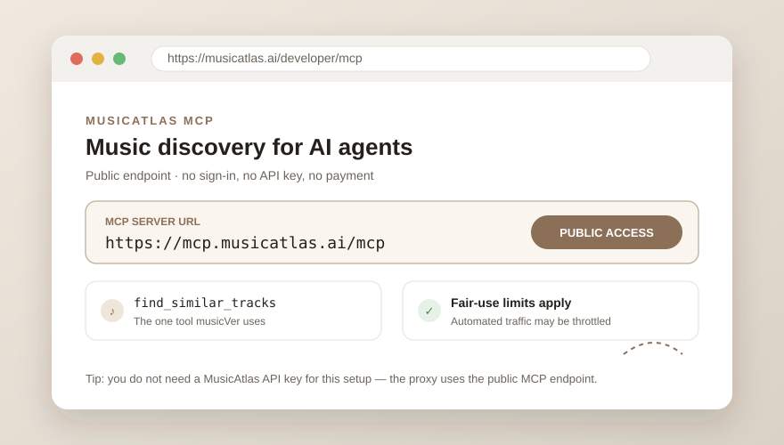
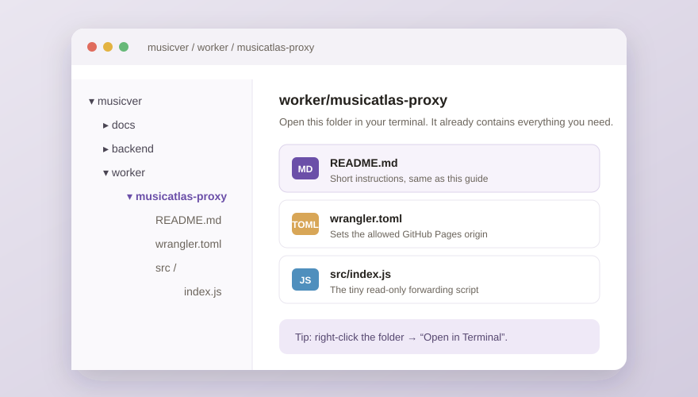
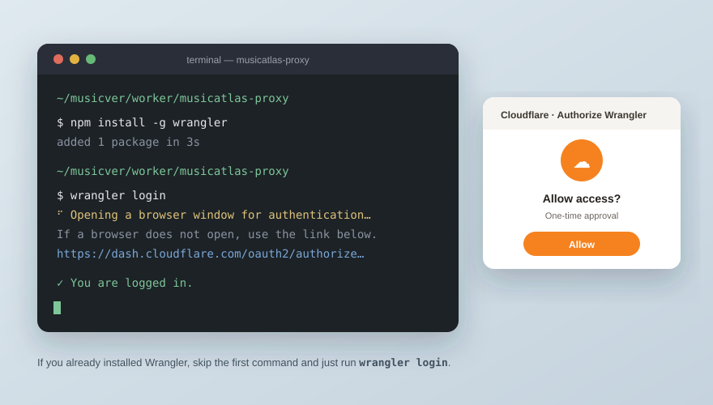
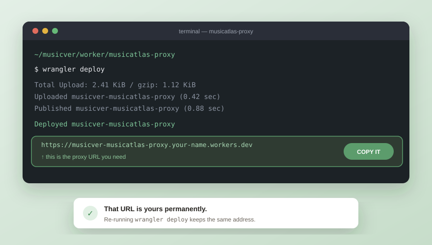
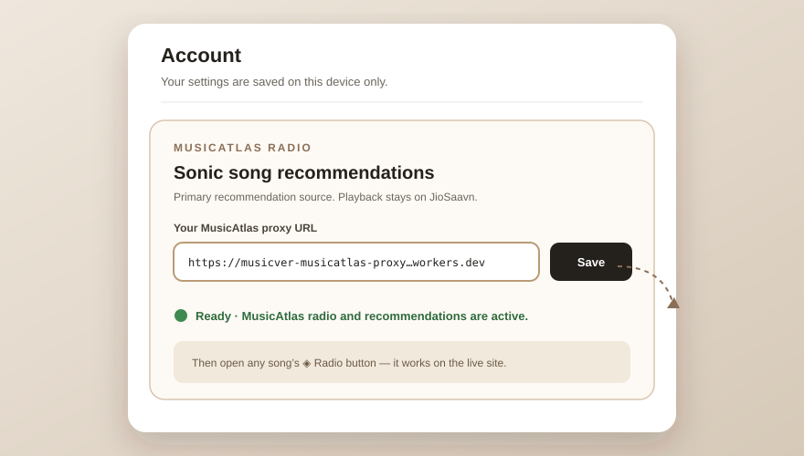

Setup guide · 2 minutes
Better radio,
song by song.
MusicAtlas compares the actual sound of a recording and suggests tracks that genuinely fit. This guide sets up the tiny free bridge that lets the published musicVer site reach it. No API key, no payment, no code to write.
First — do you actually need this?
If you are running musicVer on your own computer at 127.0.0.1:8124 or localhost:8124, you can stop here. Song Radio calls MusicAtlas directly there, with no proxy and no setup. You only need the bridge below for the published GitHub Pages site or when opening the app on your phone, because MusicAtlas blocks those browser origins.
Follow these five steps
Do them in order on a computer. You will copy one URL at the end and paste it into the app.
Confirm the public MusicAtlas endpoint
Open the MusicAtlas MCP page ↗. It publishes a remote server URL and a list of tools. The one musicVer uses is find_similar_tracks — it takes an artist and title and returns sonically similar songs.
There is nothing to sign up for. The public endpoint is meant for discovery and experimentation, so no key is issued here.

Open the proxy folder in your project
Everything you need already ships with the project. In your file explorer, open:
musicver / worker / musicatlas-proxyThree files live there. README.md is a short version of this guide. wrangler.toml sets the allowed GitHub Pages origin. src/index.js is the whole proxy — about 100 lines that forward one read-only request and nothing else.
You don't need to edit any of them.

Install Wrangler and sign in
Wrangler is Cloudflare's free command-line tool. Open a terminal inside the folder from step 2 and run these two commands one after the other:
npm install -g wrangler\nwrangler loginThe second command opens a browser window asking you to authorise Wrangler. Click Allow. If no window opens, copy the link printed in the terminal and paste it into your browser.

Deploy and copy your URL
Still in the same folder, run:
wrangler deployIn a few seconds Cloudflare prints a Published line followed by a https://…workers.dev address. That address is your proxy link. Select the whole thing — including https:// — and copy it.
wrangler deploy again later updates the same Worker; the URL does not change.
Paste the link into musicVer
Open musicVer and go to Account → MUSICATLAS RADIO. Paste your copied URL into the field labelled “Your MusicAtlas proxy URL” and press Save.
The status line should turn green and read “Ready · MusicAtlas radio and recommendations are active.” Now open any song's ◈ Radio button on the live site or your phone — it works without localhost.

If something looks off
Most issues are one of these. The app never breaks — a local song-specific mix takes over whenever MusicAtlas is unavailable.
Status still says “Not configured”
Press Save again and reload the page. The URL is stored only in that browser's local storage, so it must be entered once per device.
I pasted the MCP URL instead
The field wants your deployed Worker address, not https://mcp.musicatlas.ai/mcp. The MCP endpoint rejects GitHub Pages origins directly — that is the whole reason for the bridge.
Works on PC, not on my phone
Open musicVer on your phone, go to Account, and paste the same workers.dev URL there. There is no account linking involved.
No recommendations appear
MusicAtlas may be throttling under fair-use limits. Wait a minute and try another song. Song Radio still returns a local mix in the meantime.
Where is my API key?
There isn't one. This setup uses the public MCP endpoint. If you later switch to the REST API, you can request a free key from the MusicAtlas developer page.
What leaves my device?
Only the track and artist name of the song you open. No audio or artwork is streamed from MusicAtlas — playback is always resolved to full-length JioSaavn audio.
Ready to hear it?
Head back to the app, save your proxy URL, then press ◈ on any song. Song Radio, the recommendation shelves and playlist + picks all use MusicAtlas first.